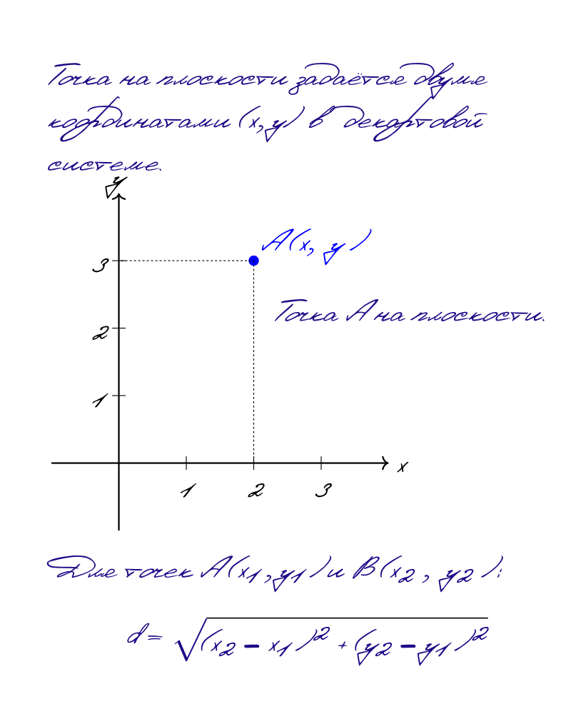

Три закона Ньютона лежат в основе классической механики и описывают движение тел под действием сил.
Первый закон Ньютона (Закон инерции)
Тело сохраняет состояние покоя или равномерного прямолинейного движения, пока внешние силы не заставят его изменить это состояние.
\[ \sum \vec{F} = 0 \Rightarrow \vec{v} = \text{const} \]

Рис. 1: Иллюстрация первого закона Ньютона — тело сохраняет скорость без действия сил
Второй закон Ньютона
Ускорение тела прямо пропорционально действующей на него силе и обратно пропорционально его массе.
\[ \vec{F} = m\vec{a} \]
где F — сила (Н), m — масса (кг), a — ускорение (м/с²)
Интерактивный эксперимент
Исследуйте зависимость ускорения от силы и массы:
5 Н
1 кг
График зависимости скорости от времени при заданных параметрах
Третий закон Ньютона
Силы взаимодействия двух тел равны по величине и противоположны по направлению.
\[ \vec{F}_{1→2} = -\vec{F}_{2→1} \]

Рис. 2: Иллюстрация третьего закона Ньютона — силы действия и противодействия
Интерактивный симулятор: Исследуйте законы Ньютона на практике (PhET)